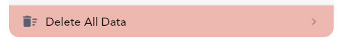

Track-Buddy FAQ
FAQ
Share Data with Partner/Other User
To sync data and share data with multiple users, you need to share a Google account. This ensures privacy when sharing financial data. Since Track-Buddy supports syncing of data with a Google account, a shared Google account will share data between multiple Track-Buddy apps that use the same account.
- Share a Google account with the users you want to sync with.
- Use the syncing feature in the app to keep data up-to-date across all users.
Currently, Track-Buddy does not support other methods of syncing due to privacy concerns and the complexity involved. Maintaining servers for this purpose is expensive and outside the scope of this app.
Syncing Troubleshooting
If you're experiencing syncing issues between devices; consider the following:
Make sure you are logged in to Google Drive with the same account on all devices. Also ensure syncing between devices is enabled. Head to More, Account, login if needed, and tap the Sync/Devices button. here, Sync Data can be toggled.

Syncing involves two steps: upload and download. Both steps must occur for changes to reflect across platforms.
You can force a sync by:
- Swiping down on the homepage
- Launching the app fresh
The app also syncs when it is launched and the user was previously logged in.
Each device needs to upload changes before they can be downloaded to another device.
Tracking Credit Card Spending
To track credit card spending:
- Create a separate account specifically for tracking credit card spending. You can transfer amounts between accounts to add credit card payments or apply a balance correction.
- Every time you make a purchase using that credit card, you would add a transaction to that account.
To view a breakdown of your spending:
- In the "Account Details" page (tapping the account twice on the homepage account switcher sections), set the cycle time range for reports to reflect the spending from your credit card account.
- Utilize the "All Spending" page to view past spending ranges associated with your credit card account. You can apply filters to only select that account. As an added bonus, you can create a budget and only select that account.
Transferring Funds Between Accounts
Note: you will need more than one account created within Track-Buddy
Creating a Transfer
When there is more than one account created within Track-Buddy, Track-Buddy allows you to transfer funds. There are three primary ways of opening the transfer popup:
- A new Transfer tab will appear when creating a new transaction
- Long pressing the (+) button will allow you to transfer funds
- Editing an account will allow you to transfer funds
Repetitive Transfers
You can create a repetitive transfer by first adding a transfer transaction, then editing it to a 'repetitive' or 'upcoming' transaction type. Track-Buddy will prompt you to change both transfer transactions and the transfer will behave as such.
Future Repetitive Transactions Not Shown
The next repetitive transaction in the sequence will show up when you mark the current one as paid.
By default, overdue transactions (when the current date is past the set transactions date) are automatically paid. You can change this behavior by heading to More, Settings & Customization, More Options, Transactions: Auto Pay Transactions. You can press the action button in the transaction entry to mark it as paid immediately. Then it will create the next transaction in the cycle.

Transaction Templates
Track-Buddy does not offer transaction templates; however, frequently used transactions can be quickly added using the following methods:
- You can quickly make a copy of common transactions. After long pressing the plus button, you will see a list of commonly used transactions, tapping them will duplicate the transaction. If the amount differs, long press on the chip to customize the amount.
- Selecting (long pressing) a transaction will also allow you to duplicate the transaction (in the selected transaction top app bar). You can then edit the newly created transaction to your liking.
Tip: You can create duplicate transactions set to the current date and time by long pressing the duplicate option.
Tip: When editing the details of a transaction, to quickly set the date of a transaction to the current date and time, long press the date and time edit entry.
Importing CSV / Excel and Data from Other Applications
You can import data in Track-Buddy by heading to More, Settings & Customization, and scrolling down to "Import & Export".
To import data into Track-Buddy from other applications:
Utilize Provided Templates
Use the provided templates within the app for importing data.
To get access to the Google Sheet template, please make a copy. Follow this guide.
Choose Import Method
You can import data in two ways:
- Using a CSV file
- Providing a link to a shared Google Sheet
Note: When importing income, use a positive amount; for expenses, use a negative amount.
Date Parsing
Track-Buddy will attempt date parsing in various formats, but the official CSV format for dates provided in the templates is recommended for accuracy.
Subcategories
If there is already an existing subcategory with a category name, Track-Buddy will prioritize that subcategory over creating a default category with that name. Therefore, subcategory transactions can be imported under the 'category' column.
Importing Transfer Transactions
To import transfers, your export source (original application) needs to be able to convert transfer transactions into single income/expense transactions. A single transfer would consist of 2 transactions, an outgoing account and incoming account transaction. This would be the universal format. Once this is done, Track-Buddy can import the transactions. These imported transfer transactions should be under one 'category'. Now merge these transactions with Merge Category into the Balance Correction category within Track-Buddy.
Note: the 'Balance Correction' category may not exist. It is automatically created when at least one transfer or balance correction is made within Track-Buddy. So if it is missing, create a transfer or balance correction on an account.
Net Worth Account Selection
To set the accounts used in the net worth calculation on the homepage, long press the homepage section. You can then select the accounts to include along with the time range used when calculating Net Worth.

You can also edit home page sections by tapping the respective section while on the Edit Home page in Track-Buddy.

Excluding a Transaction Amount
To exclude a transaction amount from all totals but still keep a transaction entry, you can edit the transaction of interest, scroll down and select More Options and toggle Include Amount. This setting is only available for Default transaction types.
Add to a Budget, Goal, or Long-Term Loan Without Affecting Account Balance
To add to a budget, goal, or long-term loan without impacting your account balance, create a separate account dedicated to tracking your budget, goal, or long-term loan contribution transactions. Transactions added to this account will not affect other account balances. Once you create a transaction added to this extra account, you can organize it into your budget, goal or long-term loan of your choice.
Archiving Budgets, Goals, and Long-Term Loans
To archive a budget, goal, or long-term loan you need to visit the edit data page for each. To visit the edit data page head to More, Budgets/Goals/Loans and tapping the 'Pencil' icon in the top right if needed. To archive a budget/goal/long-term loan you can toggle the 'eye' icon. This will make the archived item always listed at the end of lists during selections and fade out the option.
To remove a pinned budget, goal, or long-term loan on the homepage, you will need to edit the home page section separately.


Splitting a Transaction Across Multiple Categories
Track-Buddy prioritizes efficient and straightforward transaction logging. If you need to divide a transaction among various categories, you can create separate transactions for each detail, enabling you to tailor your level of detail while maintaining a simple interface for all. Although it doesn't natively support splitting transactions across multiple categories, you have the freedom to log your spending as you see fit by adding individual transactions for each detail you wish to track.
Using Multiple Currencies
Track-Buddy only supports one currency per account. You can change the currency by editing an account.

However, if you need to enter a different currency with automatic conversion into another account, you can use the currency conversion button when entering an amount.
Make sure the primary account is selected to the currency you want to convert to. Then, select another account when entering an amount, and convert the amount back to the primary account with one tap.
In the example below, 'Bank (USD)' is our primary account, and we want to convert 50 EUR to USD using the conversion rate. We can do this by selecting 'Other (EUR)' and tapping the conversion button.

To change the primary account's currency by heading to More, Accounts; the starred account represents the primary account and selected currency of the application. Track-Buddy will convert all currencies to this account.
You can customize the currency conversion rates by heading to More, Accounts, Exchange Rates. If a custom currency is not set, exchange rates are used and updated daily from https://github.com/fawazahmed0/exchange-api.

Cloud and Local Backups
Track-Buddy offers 2 methods of backups: Google Drive Cloud Backups and Local Data File Backups. To create/import backups head to More, Settings & Customization, under the 'Backups' section.
Note: Exporting and Importing CSV files as backups is NOT recommended. Track-Buddy does not export all app data nor does it import all app data when using CSV Importing and Exporting.
Deleting All Data
To delete all data in the app, go to More, About Track-Buddy, and scroll down to find Delete All Data.
This process will prompt you to delete sync data if you do not want it to be restored upon login.
After logging in again, Track-Buddy will attempt to restore sync backups. If you do not want your synced devices to be restored, you will need to delete them. Navigate to the account page, tap on Sync/Devices, and delete the sync backups.

Tips and Tricks
Customizing Bottom Navigation Bar Pages
To customize the navigation tabs, long press each one to select the page of preference. You cannot change the last tab.
Note: You can only customize tabs while in mobile layout. When in fullscreen/landscape the side navigation menu cannot be customized.
Duplicating a Transaction to the Current Date and Time
When a transaction is selected you can duplicate the transaction (in the selected transaction top app bar). To duplicate the transactions to the current date and time, you can long press the duplicate option.
You can also quickly make a copy of common transactions by long pressing the plus button. You will see a list of commonly used transactions, tapping them will duplicate the transaction. If the amount differs, long press on the chip to customize the amount.
Long Pressing to Edit
Most UI elements can be 'long pressed' (a press and hold) to edit or perform an extra action. For example, long pressing a category when selecting one during a 'Select Category' popup, will allow you to edit that category.
Copy and Paste Amounts
Most amounts within Track-Buddy can be 'long pressed' (a press and hold) to copy the amount. When adding a transaction or entering an amount, you can long press to 'copy' or 'paste' amounts from your clipboard.

Sharing Transaction Details
After selecting multiple transactions with a long press, you can share a breakdown of the selected transaction by tapping the total amount in the dropdown app bar. Alternatively, you can long press the total to copy the transactions breakdown to your clipboard.
Guides
Creating a Budget
Track-Buddy is a budget tracking application after all, so let's take a deep dive into learning how to create and manage a budget within Track-Buddy in detail.
To create a budget, first open the Budgets page. Head to More, Budgets, and tap the (+) button.

There are two types of budgets: Added Only budget and an All Transactions budget. This cannot be changed after the budget is created. However, you can create multiple budgets within Track-Buddy.
Added Only Budget:
- Only the transactions you add
- Useful for one-time budgets with custom time periods
- Example: 'Vacation' budget
All Transactions Budget:
- All transactions within selected categories and filters
- Useful for long-term budgets over multiple periods
- Example: 'Monthly Spending' budget

You can also select if you want to budget for savings (positive cash flow, such as income) or budget for negative cash flow, such as expenses.
Set a name for the budget, color, budget amount, and the start day and period. The cycle of a budget will always reset and past budget periods can be viewed. If you want your budget to start on the 21st of the month, select any date with the day of the 21 (e.g., September 21). Track-Buddy will show you the current period based on the current date from the start date you set.
To set the period, you can choose a custom budget period (time range) or an automatically recurring cycle, such as every 2 weeks or every month.
For an all transactions budget, you can select the transactions to automatically include. For example, if you would like to include income in an expense budget (which will decrease the total spend, since the opposite polarity of transactions are included), you can select Income under Transactions to Include. Tap the (i) to read about each Transactions to Include filter. You can also select which categories to include or exclude from an all transactions budget.
Each transaction can also be manually excluded from an all transactions budget. To do this, edit the transaction of interest, scroll down, tap More Options, and select the budget you would like to exclude this transaction from.
Setting Up Category Spending Goals
Once you create a budget, you can set up smaller 'sub-budgets' or, as Track-Buddy calls them, Category Spending Goals to break down your spending for each category within an overall budget.
To add category spending goals, edit the budget and tap Set Category Spending Goals. Here you can set a percentage goal (percentage of the budget total) for each category or an absolute spending goal (actual amount of money). You can also apply these goals to subcategories and main categories. By long-pressing a category entry in the budget spending overview page below the pie chart, you can quickly modify the category spending goal to suit your spending needs.
Reading a Budget Graph
Track-Buddy adds useful indicators to help you track your spending trajectory. Within a budget spending breakdown, you will see a line graph showing the amount spent versus date through the budget period.
A dashed line is drawn on the current date and the average amount spent per day up to the current day. The intersection indicates where your spending should be at that given time for a budget to stay on track.
Viewing Past Budget Periods
You can tap the history icon to see past budget period breakdowns. You can only view the history of non-custom period budgets.